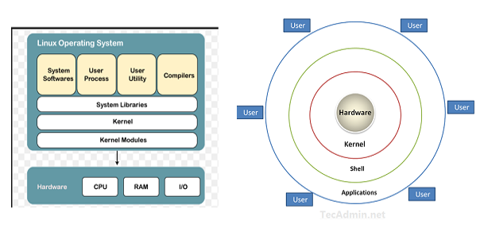

To begin with we will see what is an operating system,
Operating System
It is a type of software that interface between user and computer hardware devices. It allows user to communicate with devices and to perform desired functions. It performs all the basic tasks like file management, memory management, process management, handling input and output, and controlling peripheral devices such as disk drives and printers.
The primary purposes of an Operating System are to enable applications (Software’s) to interact with a computer’s hardware and to manage a system’s hardware and software resources.
Some popular Operating Systems include Linux , Windows , macOS, iOS, Android, etc. In the modern days, when speaking about servers, around 80% run GNU/Linux and 20% run Windows. And talking about mobile devices, around 75% run Android (which uses the Linux kernel) and 25% run IOs (which is Apple’s mobile OS).
We can see here Linux is on top when we talk about servers, but regarding desktop segment Window (with 73.72% market share) has more market share than Linux (with 3% market share)
Why do we need OS?
Nowadays, it is difficult to imagine everyday life without the use of computers. Every computer needs an operating system (OS) to work. An operating system is a set of basic system programs that manage computer hardware to perform basic computer functions, that is, it enables a connection between hardware and user programs.
here we will talk about Linux operating system, Linux overview and what benefits it offers over other OS choices.
What is Linux?
Linux is an open source Operating System was first published on 17 September 1991 by Linus Torvalds. It’s like window, macOS, android . It also like Unix operating system, most of the Linux and Unix commands are similar in nature. It is freely available for commercial as well as for non-commercial purposes. As it is available for commercial purposes that means any programmer can do some changes in the Linux kernel by doing some code and finally make it as the new distribution.
Recently, Linux has undergone a significant progress and since it provides many helpful features to companies and home users, it has become one of the most commonly used operating systems in IT industry and also available free-of-cost on the Internet.
Linux distribution
A Linux distribution (also called as Linux distro) is a collection of software that is based upon the Linux kernel. It includes GNU tools, kernel, software modules, X-server, shell utilities, an installer, and it often as a package management system. It is an Open-source project where all the programmers are combined together and make some changes in the Linux kernel by compiling the codes and make it as a new Distros.
Over the Internet, there are more than 600 Linux distros available. But, Within 600 distros maximum are not too much useful but there is some of the distro are very powerful and useful distros.
Famous Linux distribution are: ubuntu, fedora, RedHat Enterprise Linux (RHEL), Arch Linux, Chrome OS and Debian
ubuntu is one of the most popular distros in the Linux industry with 31.8% market share. It is a lightweight Linux distribution and works very smoothly and fast.
Linux Architecture
The Linux operating system’s architecture contains some of the components: the Kernel, System Library, Hardware layer, System, and Shell utility.

Linux Architecture
- Kernel:- The kernel is one of the core component of an operating system. It is responsible for all major activities of this operating system. It consists of various modules and it interacts directly with the underlying hardware. The kernel facilitates required abstraction for hiding details of low-level hardware or application programs to the system. Some important kernel types are noted below: * Monolithic Kernel * Micro kernels * Exo kernels * Hybrid kernels
2. System Libraries:- These libraries can be specified as some special functions. These libraries implement most of the functionalities of the operating system and don’t need code access rights of the modules of kernel.
3. System Utility :- System Utility programs are responsible to do specialized, individual level tasks
4. Hardware layer:- This operating system contains a hardware layer that consists of several peripheral devices like CPU, HDD, and RAM.
5. Shell:- It is an interface among the kernel and user. It can afford the services of kernel. It can take commands through the user and runs the functions of the kernel. The shell is available in distinct types of operating system’s. These operating systems are categorized into two different types of shells, which are the graphical shells and command-line shells.
The graphical line shells facilitate the graphical user interface, while the command line shells facilitate the command line interface. Thus, both of these shells implement operations. However, the graphical user interface shells work slower as compared to the command-line interface shells. There are a few types of these shells are mentioned below:
- Korn shell
- Bourne shell
- C shell
- POSIX shell
Benefits of Linux
Linux Operating System is a famous among programmers as well as regular computer users around the world.
It’s main benefits are :-
- It offers a free operating system on the internet. You do not have to shell hundreds of dollars to get the OS like Windows
- It is easy to learn Linux for beginners
- Being open-source, anyone with programming knowledge can modify it.
- The Linux operating systems now offer millions of programs/applications and Linux software’s to choose from, most of them are free.
- Multitasking operating system: can run multiple job simultaneously without affecting the system speed
- Capable of handling large no. of users simultaneously
- security : It’s not completely safe but less vulnerable than others, does not required any antivirus program
- Once you have Linux installed you no longer need an antivirus! Linux is a highly secure system. Virus is not executed until the administrator send the Password
- Linux distribution have live cd/USB option provide large community support, always take care of user privacy
- Light weight-less requirement for running Linux
- More stable rarely hang-up and slow down
- Linux freeware is the OS of choice for Server environments due to its stability and reliability (Mega-companies like Amazon, Facebook, and Google use Linux for their Servers). A Linux based server could run non-stop without a reboot for years on end.
- Provide high performance over a different networks
- Flexible, can be used for desktop/server app ,embedded system
- Software updates are in user control: more faster updates, system update continuously without failing any issues
- programmers can design their own custom operating system
Linux use cases:
- Used to manage various services such as process scheduling, application scheduling, basic peripheral devices, file system and more.
- Used to run webserver, laptops and desktops, mobile devices, servers and embedded system etc.
- Amazon also use Linux to protect server.
Why the Linux is better than other OS?
There are many features of Linux that demonstrate that it is better than other operating system
Free to Use:- Linux is accessible to the public for free. However, that is not the case with Windows. You will not have to pay 100–250 USD to get your hands on a genuine copy of a Linux distributions (such as Ubuntu, Fedora). So, it is entirely free.
Variety Of Distributions:- You will find tons of Linux distributions catered for a different set of needs. So, you can choose to install any of the available Linux distros according to your requirements. For example, there are Linux distributions for hackers, there are Linux distributions for Programmers, Linux distributions for extremely old computer’s, and the list goes on. There is a Linux for everyone.
customization :- One major advantages of Linux instead of Windows is customization. If you like tweaking your system’s looks, Linux is just perfect for you. Apart from installing themes , you have tons of beautiful icon themes. You can also do a lot around wallpapers in Linux.
software update:- If you have a Windows-powered system for a long time, you may have encountered issues with every update. However, with Linux, you would observe software updates to address every little bug and most of which isn’t system-breaking if you’re using an LTS(Long time support) version of a distribution. So, with Linux, you will notice more effective and faster updates to fix the problems you might be facing. That’s not the case with Windows.
Open Source Nature :- However, Linux is completely an open source project. You can have a look at the source code of a Linux OS, which is a plus.
Secure :- It is just the way Linux works that makes it a secure operating system. Overall, the process of package management, the concept of repositories, and a couple more features makes it possible for Linux to be more secure than Windows. When you have Windows installed, you need to download/purchase an antivirus program to keep your computer safe from hackers and malware. However, Linux does not require the use of such Anti-Virus programs. Being secure by nature would make things easier for you and save money as well because you will not have to get a premium Antivirus software.
Reliability :- Windows, as we know it, you will want to re-install Windows after a while when you encounter crashes and slowdowns on your system. If you are using Linux, you will not have to worry about re-installing it just to experience a faster and a smoother system. Linux helps your system run smooth for a longer period (in fact, much longer!).
perfect for programmers :- Linux supports almost all of the major programming languages (Python, C/C++, Java, Perl, Ruby, etc.). Moreover, it offers a vast range of applications useful for programming purposes.
The Linux terminal is superior to use over Window’s command line for developers. You would find many libraries developed natively for Linux. Also, a lot of programmers point out that the package manager on Linux helps them get things done easily. Linux also brings in native support for SSH(secure shell), which would help you manage your servers quickly. You could include things like apt commands which further makes Linux one of the most popular choices of the programmers.
Disadvantages:
- One of the main disadvantages of Linux is that it can have a steeper learning curve compared to other operating systems
- Software compatibility: One more potential disadvantage of Linux is that some of the software and applications may not be readily available. This is because many software developers focus on developing software for Windows or macOS, which have larger user bases.
- Hardware Compatibility: In Linux, certain hardware devices have limited or no support at all. This can be due to several reasons, such as the device not having an open-source driver or the manufacturer not providing Linux-compatible drivers.
- Lack of Standardization: Another point that falls under the disadvantages of Linux is the lack of standardization in the ecosystem.